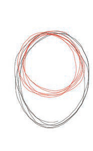
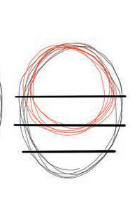
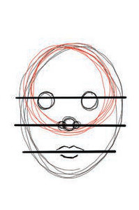
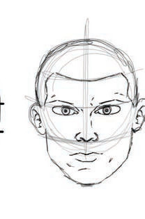

Uchoraji wa kichwa cha binadamu
Ili kuchora umbo la kichwa cha binadamu, zingatia mambo yafuatayo:
(i)
Chora maumbo mawili ya duara yakiwa yameingiliana, moja likiwa mfano wa umbo la mpira na lingine likiwa mfano wa umbo la embe;
(ii)
Gawanya umbo ulilolichora katika sehemu tatu kwa kutumia mistari;
(iii)
Chora mistari kuonesha mipaka ya masikio, macho, pua na mdomo; na
(iv)
Kisha, chora masikio, macho, pua, na mdomo kwa kufuata mipaka uliyoichora katika hatua ya tatu. Kielelezo namba 6 kinaonesha mwongozo wa kutumia maumbo ya duara katika kuchora kichwa cha binadamu.

1

2

3

4
Kielelezo namba 6: Namna ya kutumia maumbo ya duara katika kuchora kichwa

Kazi ya kufanya namba 4
Chora kichwa cha binadamu kwa kutumia maumbo ya duara.